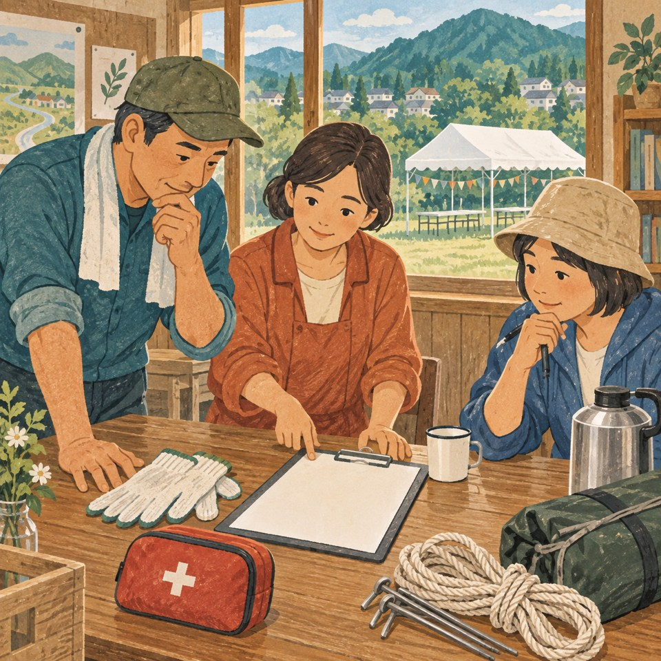
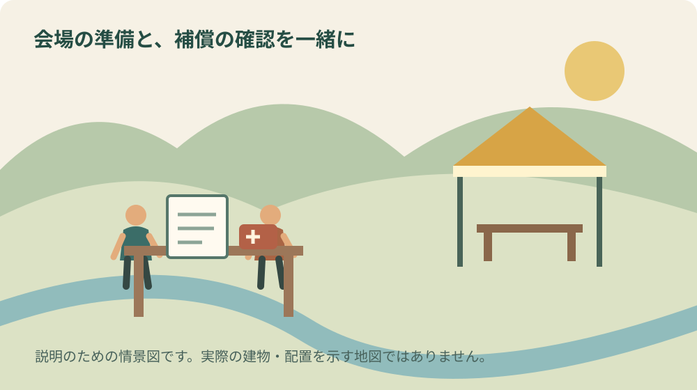
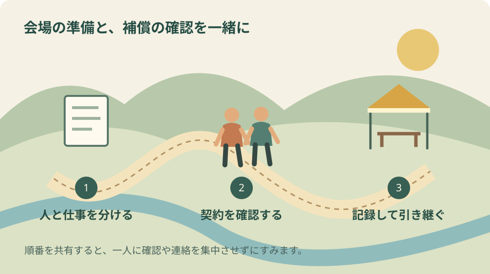

活動保険と行事用保険の違い｜森町の催し準備

表紙は内容を伝えるためのAI生成イラストです。実在の会場や当日の様子を撮影したものではありません。
この記事の要点
Q. 活動保険と行事用保険は何から比べればよいですか。
A. 活動する個人、行事の参加者、主催者の責任を分けて確認します。無償の当番でも対象になるとは限りません。加入証の正式名称、主催者、仕事内容、準備から片付けまでの日程をそろえ、社会福祉協議会や取扱窓口へ個別に相談してください。
地域の催しを引き受けると、会場や机、参加者への連絡が先に頭へ浮かびます。保険の書類は、前の担当者から受け取った封筒に入ったままになりがちです。けれども「保険には入っている」と「今回の人と作業が対象である」は、同じ確認ではありません。
森町で秋の行事を準備する人へ、ボランティア活動保険とボランティア行事用保険の違いを整理します。ここで扱うのは全国社会福祉協議会の制度として案内される保険です。名称が似た他の商品や、団体独自の契約まで同じ条件だとは考えないでください。
大石浩之（磐田市／不動産業）として、この記事では加入の判断を代行しません。2026年9月26日に取扱代理店と森町の公表資料を確認し、担当者が窓口へ持っていく情報を具体化します。保険料の安さより先に、誰のどの仕事を確認したいのかを分けるのが私の提案です。
活動する人と、行事を開く側を分けて考える
静岡市社会福祉協議会の案内は、活動保険をボランティア個人に対する保険、行事用保険を行事参加者のケガや主催者の損害賠償責任に関する保険として区別しています。この説明は制度の入口であり、森町の各団体が実際にどの商品へ加入しているかを示すものではありません。
まず、名簿をスタッフと来場者に分けてみます。受付をする人、荷物を運ぶ人、舞台を見る人では、役割が違います。同じ人が午前は準備係、午後は参加者になる場合もあります。私は、名前だけの一覧より、時間帯と役割が分かる表の方が相談の材料になると考えます。
次に、ケガをした本人への補償と、他人に損害を与え法律上の責任が生じた場合の補償を分けます。事故が起きれば必ず主催者の責任になるとも、保険に入れば何でも支払われるとも断定できません。どの契約のどの補償を確かめる話なのか、窓口へ伝えるための区分です。
会場を借りる契約に保険の記載がある場合も、参加者を含むすべてのリスクが処理されると考えません。施設側、主催団体、個人がそれぞれ契約している可能性があります。重複しているか、抜けているかの判断は、契約名と書類をそろえて取扱窓口へ確認します。
無償の当番でも、活動保険の対象とは限らない
福祉保険サービスの活動保険の説明では、自発的な意思で他人や社会へ貢献する無償の活動が基本です。社会福祉協議会への登録や届出などの条件があります。一方、対象外の例には、団体の当番制・輪番制の活動や組織運営、親睦目的の活動が挙げられています。
「お金をもらわない仕事だからボランティア保険でよい」という判断ができない点は、地域の当番を引き継ぐ際に見落としたくありません。日常で使うボランティアという言葉と、契約上の定義が一致するとは限らないからです。名称ではなく、実際の参加の決まり方を説明します。
例えば、輪番で担当する仕事、自分から申し込む仕事、事業者が業務として行う仕事を、一つの「手伝い」にまとめないことです。これは個別活動の補償可否を判定する例ではありません。窓口が判断するために、参加理由や報酬の有無を整理する作業として提案しています。
引継ぎのときには、前年度の領収書だけでなく加入証や申込内容を探します。「去年もやったから大丈夫」という口伝えを、そのまま今年の確認に置き換えないようにします。会場、主催者、作業、参加者の集め方が変わっていれば、どこが変わったかを先に書き出します。
行事用保険も、開催内容と参加者の把握が条件になる
2026年版の行事用保険パンフレットは、主催者や参加者のケガ、主催者の賠償責任を扱っています。宿泊の有無や参加者の把握方法でプランが分かれ、対象にならない行事も示されています。例えば、不特定多数で参加者かどうかを特定できない行事は対象外の例です。
受付があるかどうかだけでなく、誰が会場へ入るか、主催者がどこまで把握できるかを説明します。名簿の提出が不要なプランがあることと、誰でも入る場所なら何でも対象になることは別です。会場の境界や行事内容を図にし、該当するプランは取扱窓口へ確認します。
同パンフレットの表紙には、2025年10月1日以降に保険期間が始まる契約について、傷害補償の改定があると記されています。この記事で改定内容を全部再現することはしません。更新時には、その契約に適用される最新版と注意事項を読み、過年度の金額表を使い回さないでください。
私は、見積りを比べるときは金額欄だけを横に並べない方がよいと考えます。対象者、対象作業、期間、対象外条件が違えば、同じ買い物ではありません。安い方を選ぶ前に、今回の行事で残るリスクを担当者が説明できるかを確かめます。

森町の募集案内からも、登録の単位を確かめる
森町の学校支援ボランティアの案内は、申込者を名簿へ登録し、町の負担でボランティア保険へ加入するとしています。これは学校支援という事業についての案内です。同じ人が地域の別の催しを手伝う場合に、その契約が自動的に適用されると読むことはできません。
学校や地域でいくつもの活動に参加する人は、どの窓口へ、どの名簿で登録したかを控えます。加入済みの契約を隠して別に申し込むのでも、何か一つ入っているから追加確認は不要と考えるのでもなく、既存契約を示して相談します。二重の申込みや思い込みを減らすためです。
森町地域福祉計画・森町地域福祉活動計画では、社会福祉協議会の役割として、ボランティア連絡会と連携した活動保険への加入促進が示されています。町にも支え合いを続けるための仕組みがあります。ただし、計画があることは、一つ一つの催しの加入完了を意味しません。
地域の窓口へは、「森町で開く行事です」だけでなく、団体名、会場、日程、活動内容をまとめて伝えます。担当部署や取扱商品が分からなければ、まず相談先を確認します。本記事の比較を持参するより、団体の実際の書類と仕事の一覧を見せる方が判断に役立つと私は考えます。
準備の日、当日、片付けの日を分けて書く
福祉保険サービスの公式Q&Aは、行事の準備と後片付けも含めて加入できる場合の考え方を示しています。ただし、行事当日を含めず準備や片付けだけで加入することはできないと説明しています。自分たちの予定がどの扱いになるかは、日別の作業を示して確認します。
例えば、土曜に会場へ机を運び、日曜に催し、月曜に借用品を返す予定なら、三つの日付を相談資料へ書きます。これは、その日程なら必ず対象になるという例ではありません。開催チラシだけでは伝わらない仕事を、窓口へ説明するための書き方です。
作業内容も「設営一式」で済ませず、机運び、掲示、調理、電動工具の使用などへ分けます。保険によって扱えない作業があります。やる予定があるのに申込欄から省き、一般的な会合として説明することはしません。途中で作業が増えた場合も、実施前に取扱窓口へ確認します。
準備をする人と、催しに参加する人が違う場合は、名簿も日別に考えます。誰が何日に来るのかを後から思い出すのは負担です。必要な名簿項目と保管方法を窓口へ聞き、集める情報を必要な範囲に絞ります。連絡先の一覧を会場に置きっぱなしにしない運用も決めます。
催しの仕事を細かく分ける方法は、祭りを支える準備と片付けの記事でも扱っています。保険だけのために表を作るのではありません。人手が足りない時間や、特定の人だけに重い荷物が集中する場面も、同じ表から見つけられます。
事故の連絡先まで、担当者の交代前に残す
加入の手続きが終わったら、加入証、申込内容、窓口の連絡先をまとめます。契約番号がある場合は、その番号を分かる場所に置きます。書類を持つ会計担当が当日不在でも確認できるよう、責任者と控えの保管先を共有するのが私の提案です。
事故時には、まず人の安全確保と必要な救護を優先し、その後に主催者と契約窓口へ連絡する体制を決めます。保険の確認が済むまで救護を待つという意味ではありません。誰が状況を記録し、誰が連絡するかを事前に分けると、一人がすべてを抱えずに済みます。
記録の項目は、日時、場所、行っていた作業、関係者、現場の状態などです。記憶と推測を混ぜず、見た事実と後から聞いた話を分けます。本人の氏名や病状を団体の公開チャットへ書き散らさず、必要な担当者へ適切な方法で渡すことも、引継ぎの一部にします。
保険は事故を起こさなくする道具そのものではありません。通路を空ける、無理な一人運搬を減らす、慣れていない器具を任せないなど、現場の作業を見直す仕事は残ります。私は、保険の有無を理由に危険な段取りをそのまま通すことには賛成できません。
良い点：相談の入口と対象外の例が公開されている
良いと感じるのは、対象になる活動だけでなく、対象外の例も公表されていることです。初めて担当した人は、保険名だけから細部を推測しがちです。契約前に確認したい点を見つけられる資料があれば、窓口への相談を具体的にできます。
森町の学校支援のように、登録と保険加入の関係を案内している事業も参考になります。人が善意で集まることと、事務手続きが整うことを別にせず、参加の仕組みの中へ組み込めます。私は、活動する人が毎回一人で調べ直さなくてよい形を評価します。
注文したい点：引継ぎに、保険名だけを残さない
私が地域の運営に望むのは、「加入済み」の一言より、その判断に使った資料を残すことです。誰に何を説明し、どの条件で確認したのかがなければ、翌年の担当者は同じ質問からやり直します。保険の知識がある一人へ永久に仕事が集中する形も避けたいと思います。
ただ、全員に長い約款を暗記してもらうのは現実的ではありません。参加者向けには当日の連絡先と基本の注意、責任者向けには契約と確認記録、会計向けには支払書類と、見る範囲を分ける提案です。原本の所在は共通にし、別々の説明が食い違わないようにします。
対案・結論：今日、加入証の正式名称を一つ確認する
今日できる小さな一歩は、加入証や申込書の正式名称を確かめることです。次に、開催日と準備日、スタッフと参加者、作業内容を一枚にします。書類の正式名称が分からなければ、前任者や会計担当に保管場所を聞く。その段階から始めて構いません。
相談メモには「分かっていること」と「まだ決まっていないこと」を分けます。参加人数が未定なら、確定しているふりをせず未定と書きます。追加参加者が出たときの手続きも確認します。回答に条件が付いたら、その条件を消さずに団体へ持ち帰ります。
出店を伴う催しでは、保険と別に必要な手続きもあります。祭りの出店と許可・届出を整理した記事で確認の順序を見てください。保険加入が、飲食や会場利用などの手続きを代わりに済ませるわけではありません。

大石の視点：善意を、引き継げる段取りへ変える
不動産の実務でも、土地や建物を借りる人と、そこで催しを開く人の役割は分けて確認します。私は会場の広さや料金だけでなく、鍵を預かる人、借用品を戻す人、事故時に連絡を受ける人を具体化したいと考えます。保険の話も、その段取りの中に置くと理解しやすくなります。
森町文化会館を使う場合は、準備と撤去を含む利用時間の確認も関係します。保険上の日程と施設を借りる時間の確認を、別々の担当者だけで進めると、説明した予定に差が生まれかねません。同じ行程表を見ながら確認するのが私の提案です。
一方、書類を増やすほど担当者が疲れるのではないかという迷いもあります。そこで、毎年新しい表を作るより、一枚の行程表へ必要な欄を足す方法を考えます。負担を減らすとは、確認を省くことだけではありません。同じ情報を何度も別の紙に書かない工夫も含みます。
私は保険募集人として今回の契約を判断しているわけではなく、地域の仕事を続ける段取りを提案しています。実際の加入可否、補償範囲、事故時の支払判断は、社会福祉協議会、取扱代理店、保険会社へ確認してください。善意だからこそ、曖昧な約束を残さない方がよいと考えます。
よくある質問
無償の自治会当番なら活動保険でよいですか。
無償という条件だけでは判断できません。公式案内は、自発性や社会福祉協議会への登録などの条件を示し、団体の当番制・輪番制の活動を対象外の例に挙げています。担当の決まり方と仕事内容を具体的に伝えて相談してください。他の商品も同じ扱いだとは限りません。
行事の前日の準備も説明する必要がありますか。
日付と作業内容を分けて伝えます。公式Q&Aには準備と後片付けを含める場合の説明がありますが、準備や片付けだけの加入はできないとされています。催し当日のチラシだけでは前後の仕事が伝わりません。適用される区分と人数の数え方は取扱窓口で確認してください。
学校支援で加入した保険が別の催しにも使えますか。
森町の学校支援の案内だけでは、別の催しまで対象か判断できません。加入している正式な保険名と条件を確かめ、別の活動の主催者、内容、日程を示して相談します。加入済みという事実は窓口へ伝え、重複や不足の有無を確認してください。個別の補償は契約によります。
まとめ：保険名、人、仕事、日程を一緒に確認する
活動保険と行事用保険は、保険名だけを覚えるより、誰の何を確かめるのかを分けると整理できます。今日、加入証の正式名称を確認し、準備から片付けまでの表を作る。判断の難しい部分は契約窓口へ渡し、回答と条件を次の担当者へ残してください。
公式情報源
- 福祉保険サービス・2026年版ボランティア行事用保険パンフレット（2026年9月26日確認）
- 福祉保険サービス・ボランティア活動保険（2026年9月26日確認）
- 福祉保険サービス・よくあるご質問（2026年9月26日確認）
- 静岡市社会福祉協議会・ボランティアの保険案内（2026年9月26日確認）
- 森町・学校支援ボランティアの募集（2026年9月26日確認）
- 森町地域福祉計画・森町地域福祉活動計画（2026年9月26日確認）
制度・開催条件・営業状況は変わる場合があります。個別の利用条件は各主催者や担当窓口へ確認してください。

磐田市で不動産業を営む宅地建物取引士。富士ヶ丘サービス株式会社。森町の暮らしと、地域を支える段取りを一次情報から考えます。
プロフィール・編集方針